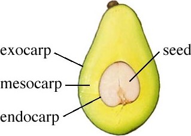

FRUIT
EXOCARP
The exocarp is the outer most layer that forms the skin of the fruit. Each layer plays a different role in
either protection or dispersal.

seed
The seeds and fruits are the results of fertilization or sexual reproduction in plants.
MESOCARP
The mesocarp is the edible part of the fruit with a pulp rich in fatty acids, amino acids, and vitamins.
ENDOCARP
the inner layer of the pericarp of a fruit (such as an apple or orange) when it consists of two or more
layers of different texture or consistency.